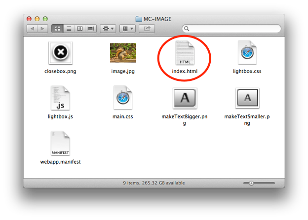
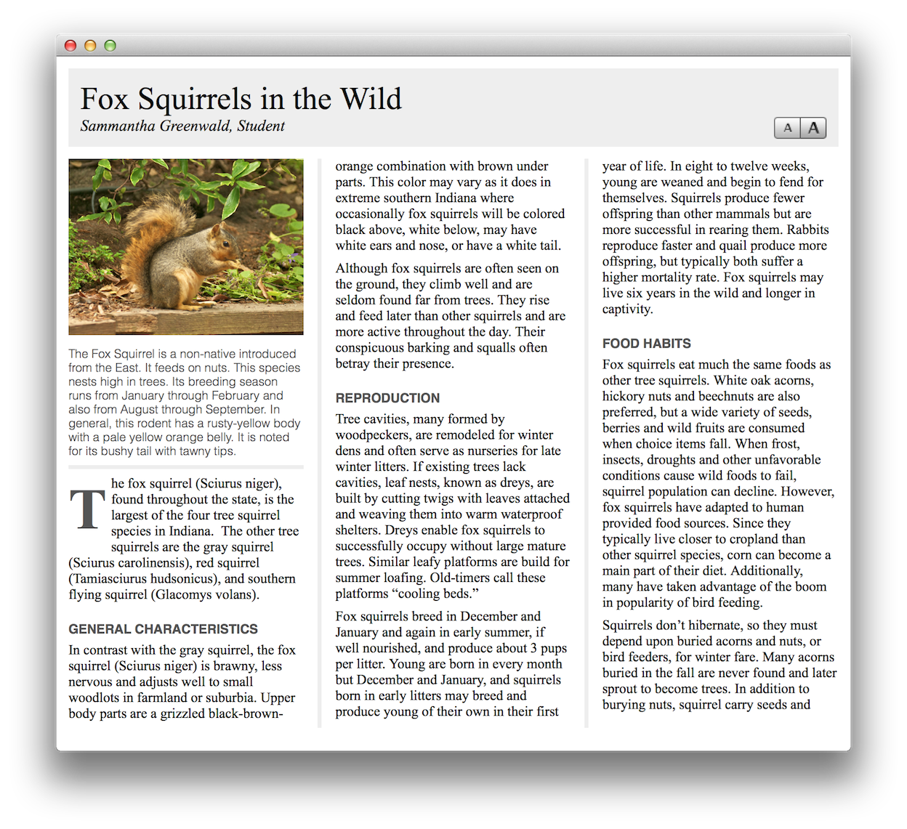
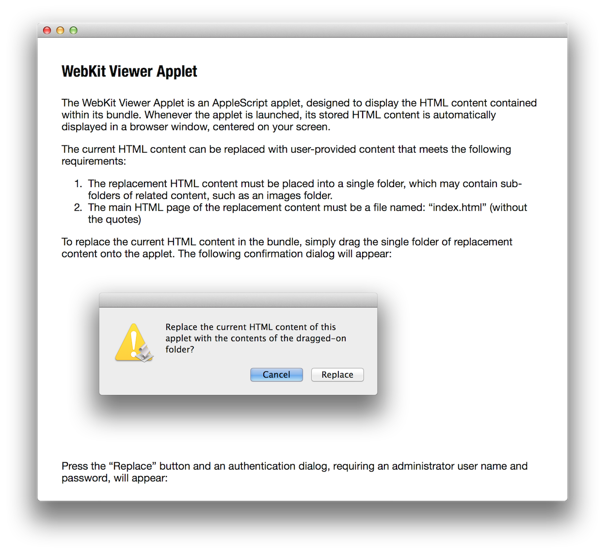
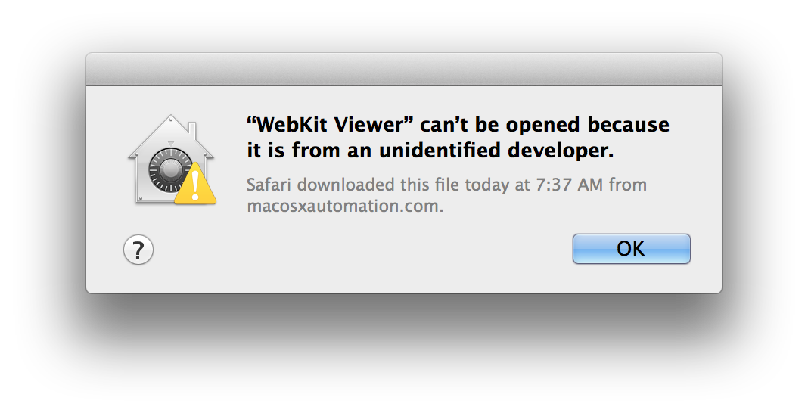
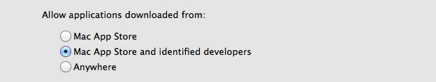
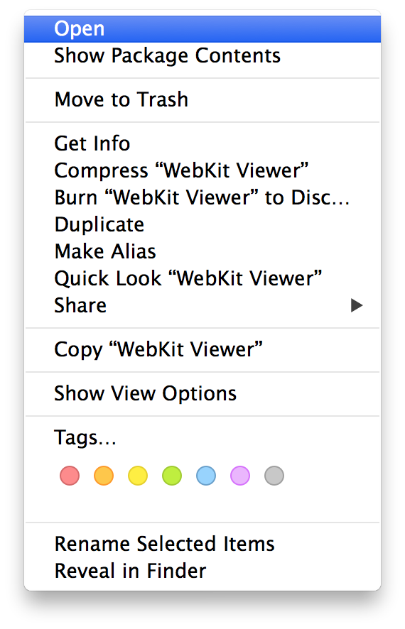
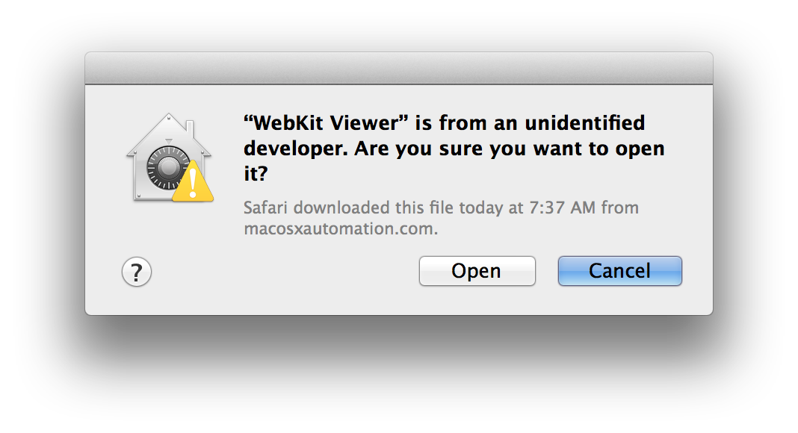
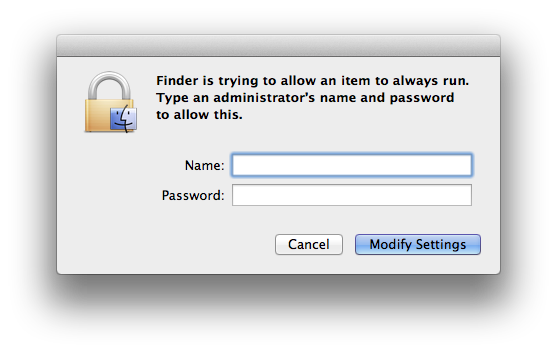
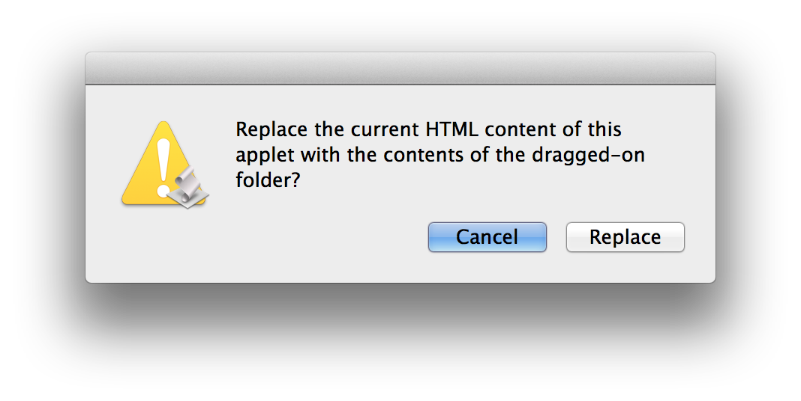

Viewing Web-Apps
As you’ve experienced by following the guided examples in this workshop, creating web-applications from selected text content is an easy process: simply select some text, and run a system service.
Once the folder containing the web-application has been created, the web-app can be viewed by either:
- Opening the file index.html, found within the web-app’s folder (see below), using a web browser application, such as Safari; or

- Placing the web-application folder on an internet server, and sharing and opening a link to the main HTML file (found in the web-app folder), with a web browser application running on your computer or mobile device. Such a link would look something like this:
http://your.internet.server.address/web-app-folder-name/index.html - Or by using the WebKit Viever Applet to host and display the web content in its own broswer window.
While web-apps are easy to create, internet access might not be available, or the preferred means for sharing content. You may wish to simply create content and share it with other Mac users without needing a network.
This can easily accomplished, by using a special droplet application, provided with this workshop. The WebKit Viewer AppleScript applet is a desktop-application that hosts and displays the contents of a web-application folder. (see below)

Try It Yourself!
The following instructions detail how to download, install, and use the WebKit Viewer AppleScript droplet.
The first step is to download and install the AppleScript droplet.
DO THIS ► DOWNLOAD the ZIP archive containing the WebKit Viewer Applet.
Unpack the ZIP archive to create a new copy of the WebKit Viewer Applet. Place the droplet on the desktop.
DO THIS ► To confirm the installation, double-click the droplet icon to summon its instructions dialog (shown below).

Should a security dialog (shown below) appear instead of the droplet’s instructions dialog (shown above), then a few extra steps are required to allow the droplet to run on your computer. Otherwise, if no security dialog appeared, skip this section and begin the section titled Using the Droplet to Create a Desktop App.

Gatekeeper
OS X includes a security feature named Gatekeeper. Found in the Security & Privacy preference pane of the System Preferences application, Gatekeeper controls which applications are allowed to run on your computer.
The security dialog you encountered when trying to run the downloaded droplet (shown above), indicates that the current Gatekeeper settings are performing as they should, blocking the execution of an application (a droplet is a type of application) that is not from Apple, or “signed” by a registered Apple developer.
Gatekeeper offers three user-configurable settings for determining which applications can be downloaded and run on your computer (see below):
- Mac App Store – Only apps that came from the Mac App Store can open.
- Mac App Store and identified developers (default in OS X Mountain Lion) – Only allow apps that came from the Mac App Store and developers using Gatekeeper can open.
- Anywhere – Allow applications to run regardless of their source on the Internet (default in OS X Lion v10.7.5); Gatekeeper is effectively turned off. Note: Developer ID-signed apps that have been inappropriately altered will not open, even with this option selected.

The Gatekeeper settings in the Security & Privacy system preference pane.
(More information about Gatekeeper)
Gatekeeper serves an important security function in OS X and should not be disabled unless you have a valid need to do so. IMPORTANT: It is not necessary to disable Gatekeeper to use the downloaded droplet. A simple exemption procedure (detailed below) is provided in OS X to allow you to run unsigned applications from trusted sources.
Exempting the Droplet
Follow these steps to assign the droplet permanent permission to run on your computer:
DO THIS ► In the Finder, Control-click or right click the icon of the droplet to summon the Finder contextual menu (see below). Select the Open menu item from the top of contextual menu.

DO THIS ► In the forthcoming confirmation dialog (shown below), click the Open button to launch the droplet.

DO THIS ► Exempting an application from Gatekeeper requires valid approval. In the forthcoming security dialog (see below), enter an administrative user name and password for this computer in the corresponding input fields, and click the Modify Settings button:

Once exempted, the droplet will launch, displaying its information dialog. No further approval is necessary to use the droplet on this computer. It will run uninterrupted each time it is used.
Creating a stand-alone self-running desktop application from the web-app generated by the Multi-Column and Single-Page services is an easy process.
DO THIS ► Drag one of the folders containing the example web-apps you created, onto the droplet icon. A confirmation dialog will be displayed: (see below)

DO THIS ► Click the Continue button in the dialog (see above) to begin the process of converting the folder contents into a self-running application. A web-view browser will appear displaying the new content when the processing has completed.
Click HERE to download desktop web-apps for all of the examples in this workshop.
In the next segment, we’ll review.